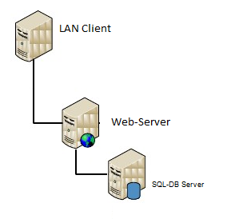
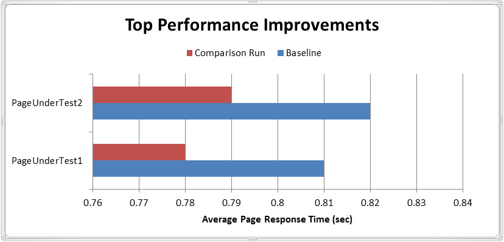

This document explains the performance of Templar version 1.7 in comparison to the previous Templar version 1.6.49.3.
This report was conducted by Templar Team with intention to provide customers with information on what performance they can expect from Templar v1.7 which is based on .NET Framework 4.5.
Templar team has put in their best efforts to conduct an unbiased test, but the performance of a website depends on many parameters, such as computer hardware, network configuration, client configuration, operating system and software configuration, site content, number of items in Templar database, information architecture, custom code and other factors.
The reader of this report uses all information in this report at his/her own risk.
If you have comments /queries about this documentation, email them to:
1. Execution Summary
2. Testing Configurations
Configuration - Two separate servers (a web server and a database server)
3. Benchmark Background
Performance of site pages created on Templar
Templar Admin UI performance
4. Comparison of Results
5. References
Machine Configurations
Templar v1.7 provides performance improvements as compared to its previous versions. It’s now built on top of .NET 4.5 to enhance performance and scalability. It makes use of and enables new features introduced in the .NET framework.
Key new features being used by Templar are listed below:
Async support for pages, modules and handlers.
ASP.NET 4.5 request validation.
Unobtrusive validation to avoid inline JavaScript for validation controls.
Bundling and minification provided by .NET 4.5
Third party Zip\Unzip is now moved to native .NET libraries.
The load/web tests were performed internally by Templar Team on common hardware. (ref: Machine Configuration).
Benchmark was performed as per the following steps:
Templar v1.6.49.3 was deployed on IIS 7.5 with site url http://pt-templar-rtm.tavisca.com
Templar v1.7 was deployed on same IIS7.5 with site url http://pt-templar-rc.tavisca.com
Templar v1.6.49.3 website was started while all others were stopped. IIS was then reset.
Test Cases were run on v1.6.49.3 website with the help of VS 2010 & results were noted down.
Templar v1.6.49.3 website was then stopped and v1.7 was started. IIS was then reset.
Same tests were re-run on v1.7 deployment & the results were noted.
Finally Results were compared.
Microsoft Windows Server 2008 for web-Server, Microsoft Windows Server 2008 for Microsoft SQL Server 2008R2
For More Info, ref: Machine Configuration

This benchmarking was done on the following aspects of Templar performance:
Performance of content (pages having a master page associated) and non-content (pages not having a master page associated) pages for a site created on Templar application under stress for serving requests, i.e. Templar Avg. page load time, Requests/sec, Total Errors occurred during test duration, etc.
Templar Admin UI performance:
The following scenarios were covered by the performance tests.
a. Create Site from scratch
b. Create Site from Template
c. Create Template
d. Publish full Site
e. Publish Site Resources
f. Publish Site Pages
g. Download Global Theme
h. Download Global Culture
i. Download Site Culture
j. Sites Listing Pagination
k. Reloading Cache (Live, Design and Main)
In this test we monitored following parameters for comparison:
Page Avg. Response Time, Errors occurred, Requests per sec. etc.
For this test, a sample site was created on Templar, in which sample pages were created (refer Artifacts Folder for the site template). This test site consisted of 4 pages; a master page designed using a custom layout, 2 content pages using this master page and a non-content page also designed using a custom layout.
The master page used a custom layout and contained the following widgets:
| Sr. No. | Widget Type | No. of instances on page |
| 1 | ContentPlaceHolder Widget | 1 |
| 2. | Html Editor Widget | 1 |
The content page contained the following widgets:
| Sr. No. | Widget Type | No. of instances on page |
| 1 | Composite Widget | 1 |
| 2. | Html Editor Widget | 3 |
The non-content page also used a custom layout and contained the following widgets:
| Sr. No. | Widget Type | No. of instances on page |
| 1 | Composite Widget | 1 |
| 2. | Html Editor Widget | 3 |
Test Configurations:
| Load test name | TemplarPage |
| Description | Templar Page Load Performance |
| Warm-up duration | 00:03:00 |
| Duration | 00:10:00 |
| Controller | Local run |
| Number of agents | 1 |
| Max User Load | 100 |
| Step Duration | 5 sec |
| Increase in load | 10 users |
| Browser | IE 8.0 |
| Network | LAN |
| Load Type | Step Pattern |
How to run the test:
Open Tavisca.Templar.PerformanceBenchmark.sln Solution.
Build the solution.
Change Test Parameters in App.config as required
<add key="TemplarPageWithMasterPage" value="http://pt-templar-rtm.tavisca.com/samplesite/explore"/>
<add key="TemplarPageWithOutMasterPage" value="http://pt-templar-rtm.tavisca.com/samplesite/free"/>
i.e.
TemplarPageWithMasterPage - Should hold URL of a Templar Site Page that uses a master page.
TemplarPageWithOutMasterPage - Should hold URL of a Templar Site Page not using a master page.
Run the Test named TemplarPage.loadtest from TestView window.
In this test, we were monitoring average response time for activities like Templar site creation from scratch, Templar site creation from Template, creation of Template, downloading cultures and themes, site list pagination, cache reloading etc.
How to run the test:
Open Tavisca.Templar.PerformanceBenchmark.sln Solution.
Build the solution.
Coded UI tests have been created in the solution for calculating the time required for various scenarios.
Change Test Parameters in App.config as required
<add key="TemplarAdminUIUrl" value="http://pt-templar-rtm.tavisca.com/templar/Login.aspx"/>
<add key="UserName" value="sa"/>
<add key="PassWord" value="zaq1ZAQ!"/>
<add key="SiteName" value="PerfTest"/>
<add key="SiteTemplateName" value="PerfTest_Template"/>
i.e.
TemplarAdminUIUrl – Should point to URL of Templar login page.
UserName – Templar superuser login name.
Password – Templar superuser password.
SiteName – Name of site to be created by the Site Creation test.
SiteTemplateName – Name of the site template to be created by the Template Creation test.
Run the following tests from the TestView window and note down the time calculated for execution for each test (displayed in the test results):
a. CreateSiteFromScratch
b. CreateSiteFromTemplate
c. CreateTemplate
d. PublishFullSite
e. PublishSiteResources
f. PublishSitePages
g. DownloadGlobalTheme
h. DownloadGlobalCulture
i. DownloadSiteCulture
j SitePaginationTest
k. ReloadLiveModeCache
l. ReloadDesignModeCache
m. ReloadMainModeCache
Templar v1.6.49.3 has been used as Baseline for comparison while Templar v1.7 is the Comparison Run.

Avg. Page Response Time (ms):
| Test Case | Baseline | Comparison Run | Response Goal | % Change from Baseline | % from Goal |
| PageWithoutMasterPageCoded | 0.81 | 0.78 | 2.00 | 3% | 61% |
| PageWithMasterPageCoded | 0.82 | 0.79 | 10.00 | 3% | 92% |
Machine Parameter Comparison:
| Counter | Baseline | Comparison Run | % Change from Baseline |
| Errors/Sec | 0.00 | 0.00 | 0% |
| Exceptions | 0.00 | 0.00 | 0% |
| Http Errors | 0.00 | 0.00 | 0% |
| Requests Timed Out | 0.00 | 0.00 | 0% |
| Total Errors | 0.00 | 0.00 | 0% |
| Avg. Page Time | 0.50 | 0.49 | 3% |
| Pages/Sec | 87.4 | 91.4 | 4% |
| Total Pages | 52440.00 | 54840.00 | 5% |
| Avg. Connection Wait Time | 0.00 | 0.00 | 0% |
| Avg. Content Length | 20393.0 | 20396.0 | 1% |
| Avg. First Byte Time | 0.49 | 0.48 | 3% |
| Avg. Response Time | 0.49 | 0.48 | 3% |
| Cached Requests | 52380.00 | 52490.00 | 2% |
| Failed Requests | 0.00 | 0.00 | 0% |
| Passed Requests | 53040.00 | 55440.00 | 5% |
| Requests/Sec | 88.4 | 92.4 | 5% |
| Total Requests | 53040.00 | 55440.00 | 5% |
| User Load | 100.00 | 100.00 | 0% |
| Scenario | Baseline | Comparison Run | % Change from Baseline |
| Create Site From Scratch | 3387 | 3849 | -11% |
| Create Site From Template | 3722 | 4212 | -11% |
| Create Template | 2091 | 1478 | 29% |
| Publish Full Site | 7685 | 6606 | 14% |
| Publish Site Resources | 6777 | 6716 | 1% |
| Publish Site Pages | 5662 | 5635 | 1% |
| Reload Live Mode Cache | 4473 | 4231 | 5% |
| Reload Design Mode Cache | 6802 | 6069 | 10% |
| Reload Main Mode Cache | 6932 | 6495 | 6% |
| Download Global Theme | 2885 | 669 | 76% |
| Download Global Culture | 2740 | 1644 | 40% |
| Site Pagination | 1654 | 1640 | 1% |
| Download Site Culture | 1109 | 1232 | -10% |
| Scenario | Counter | Baseline | Comparison Run | % Change from Baseline |
| PageWithMasterPage | Total Time (ms) | 6024 | 5212 | 14% |
| Request Time (ms) | 5487 | 3415 | 38% | |
| Response Bytes | 225187 | 225101 | 0% | |
| PageWithoutMasterPage | Total Time | 214 | 154 | 28% |
| Request Time | 127 | 82 | 35% | |
| Response Bytes | 216780 | 216770 | 0% |
Web Server Configuration:
OS Name: Microsoft Windows Server 2008 R2 Standard
Version : 6.1.7601 Service Pack 1 Build 7601
OS Manufacturer: Microsoft Corporation
System Manufacturer: VMware, Inc.
System Model: VMware Virtual Platform
System Type: x64-based PC
Processor: Intel(R) Xeon(R) CPU X5650 @ 2.67GHz, 2666 MHz, 1 Core(s), 1 Logical Processor(s)
BIOS Version/Date: Phoenix Technologies LTD 6.00, 10/13/2009
Installed Physical Memory (RAM): 6.00 GB
Total Physical Memory: 6.00 GB
Available Physical Memory: 4.19 GB
Total Virtual Memory: 12.0 GB
Available Virtual Memory: 10.2 GB
Database Server Configuration:
OS Name: Microsoft Windows Server 2008 R2 Standard
Version : 6.1.7601 Service Pack 1 Build 7601
OS Manufacturer: Microsoft Corporation
System Manufacturer: VMware, Inc.
System Model: VMware Virtual Platform
System Type: x64-based PC
Processor: Intel(R) Xeon(R) CPU X5650 @ 2.67GHz, 2666 MHz, 1 Core(s), 1 Logical Processor(s)
BIOS Version/Date: Phoenix Technologies LTD 6.00, 10/13/2009
Installed Physical Memory (RAM): 6.00 GB
Total Physical Memory: 6.00 GB
Available Physical Memory: 4.19 GB
Total Virtual Memory: 12.0 GB
Available Virtual Memory: 10.2 GB